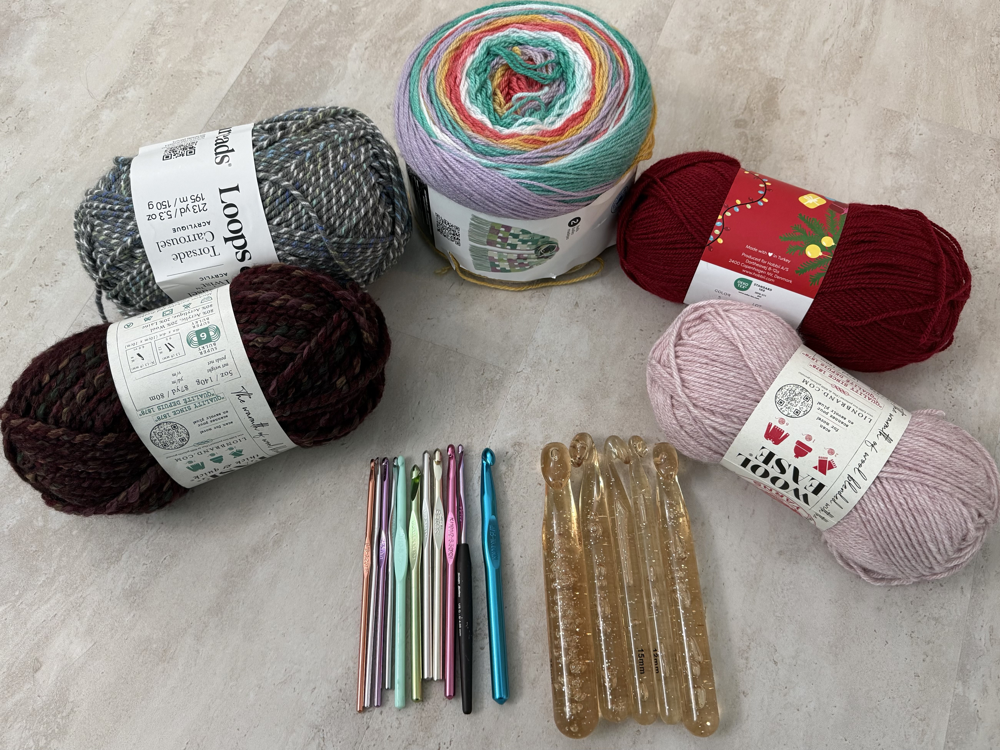
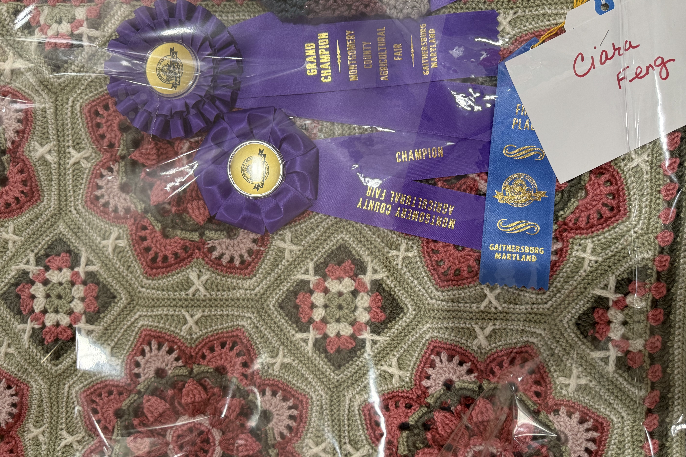
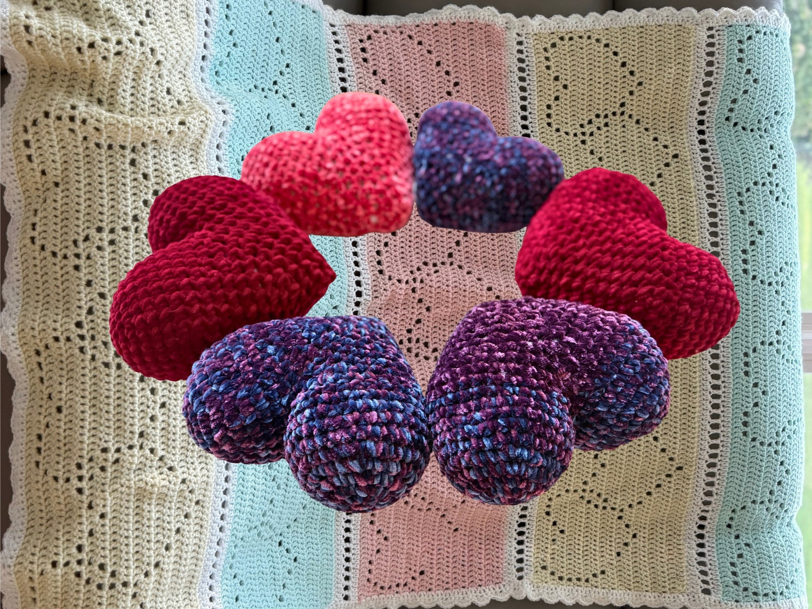
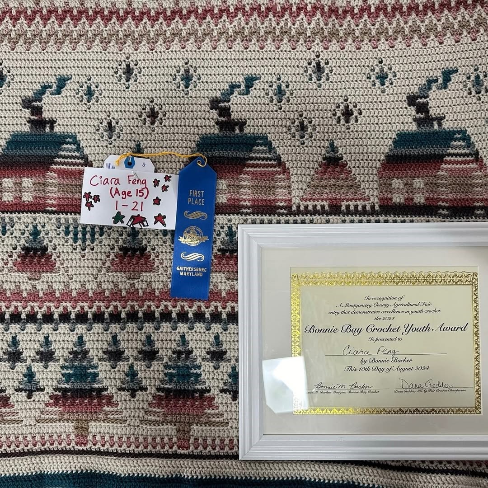
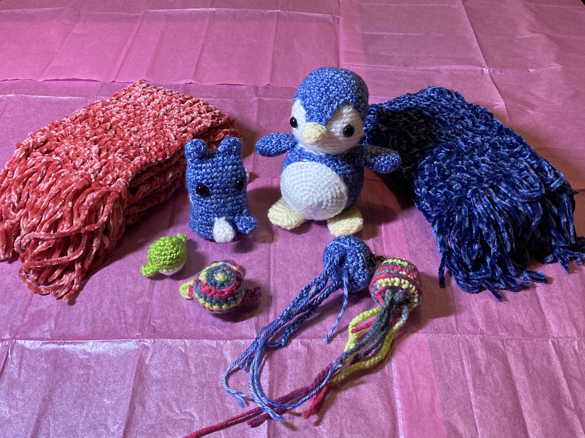

Upcoming Event
Community Crochet Session
March 16, 2026 • Local Library
Volunteers will gather to crochet blankets and comfort items together. No experience is required—just a willingness to learn, create, and help.

Follow donation deliveries, volunteer activities, awards, and project updates as we continue creating comfort through handmade care.
March 16, 2026 • Local Library
Volunteers will gather to crochet blankets and comfort items together. No experience is required—just a willingness to learn, create, and help.

August 8–16, 2025 • August 21–September 1, 2025
Stitches for Care participated in county and state fair crochet competitions, earning multiple top honors including Grand Champion and Judge’s Choice Awards.

August 1, 2025
Stitches for Care delivered two handmade crochet blankets and six heart pillows to the Montgomery County Association for Family & Community Education, helping extend comfort and care to local families and community programs.

2023–2024
Ciara received the Bonnie Bay Crochet Youth Award in both 2023 and 2024, reflecting consistent dedication and growth in crochet craftsmanship and community involvement.

2023
What began as a crochet hobby grew into a service project when Ciara completed her first handmade donation of blankets and scarves, marking the beginning of Stitches for Care.

Volunteer, donate supplies, or connect us with a community organization that could benefit from handmade comfort items.
Contact Us